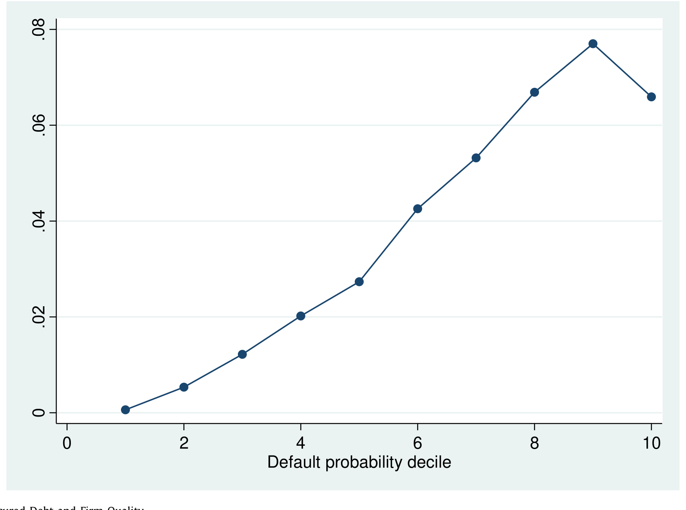
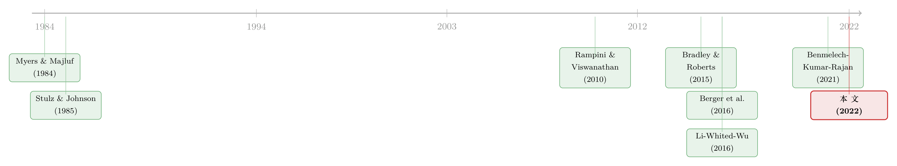

未动用的抵押品，是高评级公司留给坏天气的「救生艇」
本文读的是 Benmelech, Kumar & Rajan (2022, Journal of Financial Economics)：作者用同一家公司、同一时点上担保债与无担保债的利差之差，干净地量出了「担保溢价 (secured credit premium)」。结论很反直觉——担保确实让债更便宜，而且在公司信用恶化、经济转冷、信用利差走阔时更便宜；但真正会去发担保债的，偏偏是那些信用差的公司；高评级公司几乎不碰担保债。原因是：对一家投资级公司而言，那些尚未被抵押的资产本身就是一份保险，是留给坏天气的余量，平时绝不轻易动用。
1 一个被「选择」搞反的常识
先从一个看似简单的常识说起。
按理说，一笔债如果有抵押品 (collateral) 撑腰，债权人在公司破产时能优先拿回钱，风险更小，那它的利率本就该比无担保债更低才对。这是教科书级别的直觉。
可一旦你真的去数据里比，常常会得到相反的结论。Berger and Udell (1990) 很早就指出：在跨公司的横截面里，担保债的利率往往比无担保债更高。Strahan (1999) 也发现，即便控制了公开可得的风险指标，担保贷款的利率依旧偏高。难道抵押品反而是坏事？
当然不是。问题出在「谁、在什么时候去抵押」这件事上。越是风险高的公司、越是在风险高的时点，债权人才会强按着借款人交出抵押品。于是「有担保」这个标签，本身就携带了「这家公司此刻很危险」的信息。你拿担保债和无担保债直接对比，比的其实不是「担保 vs 不担保」，而是「危险的公司 vs 安全的公司」。这是一个典型的选择问题 (selection problem)。
这正是本文一切估计的出发点：不处理好选择问题，「担保到底值多少钱」这个问题根本无从谈起。
那怎么办？
2 识别策略：同一家公司、同一时点
接着，一个自然的解法浮现出来：既然「危险公司在危险时点发担保债」会污染比较，那就把公司和时点都固定住——只比较同一家公司、在同一时刻发出的担保债与无担保债之间的利差。这样一来，公司的基本面、宏观环境、当时的市场情绪……所有随公司和时间变化的东西，都被「吸收」掉了，剩下的差异就只能归给「担保」这一件事。
作者把它写成一个简洁的回归：
这里 spread_{i,j,t} 是公司 j 在时点 t 发行的债 i 的利差，secured_{i,j,t} 是担保虚拟变量。真正被关心的是 -β，作者称之为担保溢价：担保把利差压低了多少个基点。识别的全部力量都压在那一项 firm × time 固定效应 δ_{j,t} 上——它要求同一家公司在同一时点既发了担保债、又发了无担保债，我们才能在「其他一切都一样」的前提下，读出担保本身的价格。
作者动用了三个数据集，从三个不同角度反复验证这同一个识别策略：
- DealScan（银行贷款，1994–2018）：一个贷款 deal（package）里常常同时含一笔担保 facility 和一笔无担保 facility，识别就来自 package 内部的对比。最终样本
50,614笔 facility、32,420个 package。 - Mergent FISD（债券发行，1980–2018）：
30,041笔债券发行，担保债靠 senior secured 分类再辅以债券名称的文本匹配（"EQUIP"、"MTG"、"BACKED"、"COLL"、"1st"）识别出来。 - TRACE（二级市场成交，2002 起）：
3,675,393个债券-日观测，用成交价反推的隐含收益率，看二级市场里投资者愿意为担保让出多少利差。
这套「同一借款人、同一时点」的思路并非作者首创——Berger et al. (2016) 用玻利维亚的银行数据、加上 firm × bank × time 固定效应，是这条路线的早期范本，他们估出的担保溢价约 60 个基点。本文的不同之处在于：玻利维亚样本几乎没有美国数据里那么严重的选择问题，而作者要做的，是在选择问题极重的美国大样本里把它压下去，并进一步用量出来的溢价去解释谁发、何时发、为什么发担保债。
3 担保到底值多少钱：穷人付得多，富人付得少
用对了识别策略，担保溢价果然为正：无论银行贷款还是债券，担保都让利差实实在在地下降。
但真正有意思的是它的横截面分布。作者发现，担保溢价随公司质量呈现出极强的「贫富分化」：
- 对投资级 (investment-grade, IG) 公司（标普评级 BBB− 及以上），担保只把发行利差压低约 2 个基点——几乎可以忽略。
- 对投机级（below-investment-grade） 公司，这个数字跳到了 55 个基点。
- 在 TRACE 二级市场里反差更夸张：投机级发行人的担保溢价高达约 129 个基点，而投资级发行人的担保溢价在统计上与零无异。
直觉其实不难：如果债权人本就笃信这家公司几乎不会破产、即便破产也能足额收回（因为资产充裕），那抵押品提供的那点破产保护就不值钱。作者进一步证实——担保溢价在公司规模大、杠杆低、资产有形性 (tangibility) 高时更低。安全的公司，抵押品几乎白送也没人多给一分钱；危险的公司，抵押品才是硬通货。
接着，把镜头从横截面摇向时间序列，同一逻辑再次显现。随着一家公司信用质量恶化，它的担保溢价上升。但上升不是均匀的：从宽口径评级 A 滑到 BBB，担保溢价在经济和统计意义上几乎不动；可一旦从 BBB 跌到 BB、从 BB 跌到 B、从 B 跌到 CCC，担保溢价分别再跳升 92、21、131 个基点。担保的价值，是在公司跌破投资级那条线之后才陡然「点燃」的。
而且，当代表信用市场松紧的 Baa–Aaa 利差走阔时，担保溢价也更高——并且时间序列上的这种波动，几乎全部由投机级公司的利差行为驱动。换句话说：债权人在系统性金融压力之下、面对高信用风险的公司时，才格外看重那一纸担保。
4 反转：既然担保这么值钱，高评级公司为什么不发？
到这里，一个尖锐的矛盾摆上了台面。
如果担保对债权人这么有价值，按照公司金融的标准理论，公司应该抢着发担保债才对。Stulz and Johnson (1985) 说，有代理问题的杠杆公司理应主动发担保债来缓解代理冲突；按 Myers and Majluf (1984) 的啄食顺序 (pecking order) 逻辑，担保债的信息敏感度更低、在啄食顺序上更靠前，公司本该先把担保债的额度用尽，再去发更次级的债。
可现实恰恰相反：投资级公司几乎不发担保债。Benmelech et al. (2021) 早就指出，从 BBB− 往上每一个投资级评级档里，中位数公司几乎不发任何担保债。这是为什么？
但真正关键的一步在于：Myers–Majluf 的论证成立于一个一次性的静态模型。一旦把时间拉长、放进一个动态世界，结论就翻转了。沿着 Rampini and Viswanathan (2010, 2013) 的思路——今天用掉的抵押品余量，可能让你明天错过一笔本可做成的投资，或在意外冲击来临时失去自救的能力。于是，未被抵押的资产 (unencumbered collateral) 就不再只是「还没用的额度」，而成了一种余量 (slack)、一份保险：投资级公司只要还能靠发无担保债融资，就宁可把抵押品完好地攥在手里，留着应对不测。
Li et al. (2016) 用一个结构模型把这层意思量化了：公司保留「再发更多债的灵活性」（也就是与数量约束保持安全距离）所带来的好处，与债务的税盾收益不相上下。这就解释了为什么投资级公司宁愿持续发无担保债，把抵押品按兵不动。
妙就妙在，这同一套逻辑还顺手解释了「为什么投资级公司的担保溢价那么低」。对一家手握大量未抵押资产的投资级公司，今天的无担保债配上保护性契约，等到坏事临头时仍能要求并拿到抵押品——所以今天的无担保债与今天的担保债之间，违约时的损失差距很小，担保溢价自然就低。反过来，对一家已经把抵押品抵得差不多的低评级公司，今天的无担保债在未来很难再「升级」为担保债，两者的损失差距很大，担保溢价就高。
一句话：未动用的抵押品，本身就是 slack。（顺带一提，关于担保债权在动态中如何被「抢夺」与重置，可参见《把抵押品从老债主手里「抢」过来，反而是件好事？》；关于债务结构如何在时间里持续变动，可参见《债，其实一直在动》。）
5 发行行为：危险的公司，才在坏天气里被迫发担保债
理论说通了，证据呢？作者把担保溢价从「定价」推进到「发行」，去看谁在什么时候真的发了担保债。
结论与上面的故事严丝合缝：
- 投机级公司的担保债发行，随
Baa–Aaa利差走阔而增加。Baa–Aaa利差每上升一个标准差，投机级公司发行担保债的概率就提高 5.2 个百分点。再控制信用条件后，本文构造的月度担保溢价指标每上升一档，投机级公司发担保债的概率也随之上升——债权人越看重担保，这些公司就越被推着去发担保。 - 投资级公司则纹丝不动。 外部融资条件恶化时，它们的担保债发行没有任何上升，与担保溢价的相关性也微乎其微。它们就是不动那份保险。
这种「公司质量」与「担保债发行」之间的关系，正是 Figure 4 想讲的故事。

Figure 4: Secured Debt and Firm Quality
更进一步，作者顺着 Rampini and Viswanathan (2020) 的思路，检验了未抵押有形资产 (unencumbered tangibility) 的作用：在投机级公司里，那些「未抵押有形性」（净厂房设备减去担保债、再除以总资产）高于中位数的公司，担保溢价比低于中位数的公司低 99 个基点。也就是说，手里还攥着没抵押资产的公司，连无担保债都更好发、担保溢价更低——未抵押资产确实在为无担保债「兜底」。
6 一场天降的自然实验：新冠与 Carnival 的「救生艇」
然后，历史送来一个近乎完美的自然实验。
2020 年初新冠疫情爆发，是一个如假包换的、未被预期的总量冲击。在美联储 3 月 23 日大规模干预之前，各类风险利差全线飙升，连投资级无担保债的信用利差也被打爆——市场对全行业的违约概率预期都抬高了。但即便如此：
- 投资级债券的担保溢价几乎纹丝未动，依旧贴着零；
- 投机级债券的担保溢价却一飞冲天。
发行行为同样泾渭分明：投资级公司在 3、4、5 月疯狂发行无担保债，哪怕无担保利差已经大幅走高，担保债只占一小部分；投机级公司 3 月几乎发不出债（市场对它们基本关闭），4 月才恢复，而且主要发的是担保债；等到 5、6 月金融条件缓和，担保债占比又降了下来。更耐人寻味的是：这段时间里真的发了担保债的公司，其资产负债表上原有的存量担保债，显著低于历史上那些发担保债的公司——它们的抵押品余量，关键时刻真的派上了用场。
最生动的例子是经营邮轮的 Carnival。疫情前它是投资级，疫情中每月烧掉 10 亿美元现金，降级一触即发。但 2020 年 4 月，它用价值 280 亿美元的邮轮作抵押，成功卖出了 40 亿美元债券。《金融时报》写道：Carnival 之所以有这么大的余地去抵押资产，恰恰因为它此前的投资级评级让它能够靠无担保方式自由借钱——它一直没动用那些抵押品。截至作者写作的 2022 年 6 月，Carnival 靠这份抵押品余量躲过了破产（尽管没躲过降级）。
未动用的抵押品，是坏天气里的一艘救生艇。这就是全文反复敲打的那一个核心。
7 文献脉络
把这条研究线索捋一遍，故事的来龙去脉就清楚了。
最早，是关于抵押品「为什么存在、值多少钱」的两支理论：Myers and Majluf (1984) 的啄食顺序奠定了「信息不对称下融资有先后」的基调；Stulz and Johnson (1985) 则从代理冲突角度，正面分析了担保债的作用。它们共同构成了「公司应当主动发担保债」的经典预期。
接着，一个自然的问题是：这套静态逻辑在动态世界里还成立吗？Rampini and Viswanathan (2010, 2013) 给出了关键的转向——把抵押品视为风险管理与债务容量的载体，未用的抵押品是一种应对未来的保险；Li, Whited and Wu (2016) 进一步把这种「保留灵活性」的价值结构化、量化到与税盾比肩。这条线，正是本文解释「为什么高评级公司不发担保债」的理论支柱。

与此并行的，是一支「如何干净地量出担保价值」的实证方法线。Bradley and Roberts (2015) 用 DealScan 研究契约（含担保）的时机与定价，发现契约在经济周期低谷更常被使用、且确实被定价；Berger et al. (2016) 则确立了「同一借款人、同一时点比较担保与无担保利差」的识别范式。本文站在这两条线的交汇处：既继承 Berger et al. 的识别思路（并把它推广到选择问题更严重的美国大样本），又用 Rampini–Viswanathan 的动态保险逻辑，把「担保溢价」从一个定价数字，升级为解释发行行为的钥匙。它也与作者自己的 Benmelech et al. (2021)《The Decline of Secured Debt》互为表里。
评论与延伸（Q&A + 研究方向）
(a) 几个可能的疑问
Q：firm × time 固定效应真的能洗掉选择问题吗？
它洗掉的是「随公司和时点变化」的混杂——只要同一公司同一时点既发了担保债又发了无担保债，公司基本面、宏观环境就都被吸收。但它洗不掉债内层面的选择：公司可能恰恰把最差的那批资产/最脆弱的那笔债拿去担保。作者用
X控制期限、优先级、契约、可赎回等可观测特征来缓解，但无法排除不可观测的债内选择。这是识别上最该惦记的地方。
Q：55 个基点的担保溢价，和 Berger et al. (2016) 的 60 个基点是一回事吗？
量级上惊人地接近，但来源不同。Berger et al. 的玻利维亚样本据作者说几乎没有美国数据里的选择问题（其原始相关甚至是负的），而美国样本里若不处理选择，结论会被严重扭曲。两者数字相近，更像是「殊途同归」地印证了担保确有价值，而非同一参数的复制。
Q：低评级公司发更多担保债，会不会只是因为它们除了担保债什么都发不出来，而非主动选择？
这恰恰是作者想讲的机制的一部分，而非反驳。低评级公司因为抵押品大多已被占用、无担保市场对它们关闭，所以坏天气里「只能」发担保债；高评级公司则「能选择不发」。「被迫」与「保险」是同一枚硬币的两面——关键证据是：真正发担保债的公司，存量担保债显著更低，说明动用的是此前刻意保留的余量。
Q：为什么 A 到 BBB 担保溢价几乎不动，BBB 到 BB 却跳 92 个基点？
因为担保的价值是或然的 (contingent)：只有当违约概率高到抵押品真有可能被动用时，它才值钱。投资级区间内违约仍是小概率事件，担保几乎是「买了用不上的保险」；一旦跌破投资级，违约从尾部事件变成现实威胁，担保的或然价值才被「点燃」。
Q：这是否意味着 pecking order 错了？
不是错，而是不完整。Myers–Majluf 在一次性静态模型里成立；本文（沿 Rampini–Viswanathan）说明，在动态中「保留抵押品余量」的期权价值会压倒静态的啄食顺序收益。对随时可能遭遇冲击的投资级公司，留着 slack 比今天省下的那点信息成本更值钱。
Q：担保溢价是「真实的损失给定违约之差」，还是也混入了流动性等其他定价因素？
作者用 TRACE 二级市场隐含收益率交叉验证（投机级约 129 bps、投资级近零），与发行市场结论一致，降低了「纯发行市场摩擦」的担忧。但担保债与无担保债在二级市场的流动性、持有人结构本就可能不同，这部分难以完全剥离，是溢价解读上的一个保留。
(b) 几个可能的研究问题与提案
1. 担保溢价与外资持有人的「或然撤离」
【经济故事】本文证明担保溢价在系统性压力下对低评级公司陡升。若一家公司的无担保债大量由外资持有，而外资在压力期更易「逃向安全/逃回本国」，那么它在坏天气里被迫转向担保发行的概率是否更高？外资持有比例可能放大「保险被迫动用」的速度。 【可行性】中。需要 Mergent/TRACE 接 eMAXX 或 TIC 的持有人国别数据，识别可用
Baa–Aaa利差 × 外资持有比例的交互，并以 firm × time 思路控制选择。数据可得但持有人国别匹配较费工。
2. 未抵押有形性能否预测困境期的存活？
【经济故事】Carnival 的故事提示：危机前保留的抵押品余量，可能直接决定一家公司能否避免破产。把「未抵押有形性」当作一个事前的「救生艇容量」指标，检验它对新冠（或 2008）期间违约/降级/存活的预测力。 【可行性】高。Compustat 的净 PP&E、Mergent 的存量担保债即可构造该指标，结合 2020 年违约与发行结果做横截面/事件分析，识别清晰、数据现成。
3. 信用市场冲击下，担保发行的「门槛评级」在哪？
【经济故事】本文显示担保溢价在跌破 BBB 后陡升。是否存在一个评级阈值，公司跨过它之后担保发行行为发生结构性突变？这天然适合断点设计。 【可行性】中。可在评级边界（如 BBB−/BB+）附近做模糊断点回归 (fuzzy RDD)，但评级并非外生分配、且边界附近样本可能稀疏，识别需谨慎处理评级内生性。
4. 担保溢价指标作为信用周期的「领先表」
【经济故事】作者构造了月度担保溢价指标，且其波动几乎全由投机级驱动。它会不会比
Baa–Aaa利差更早地反映债权人对或然违约的重新定价，从而预测发行量、违约率乃至投资？ 【可行性】高。月度担保溢价可从 Mergent/TRACE 直接复制，做与宏观/信用变量的预测回归即可，纯时间序列，doable。
我的判断
这篇文章最漂亮的地方，不在于又测了一遍「担保溢价为正」——这件事 Berger et al. (2016) 已经做过——而在于它把一个定价量（担保溢价）转化成了解释行为（谁发、何时发担保债）的工具，并用一个统一的动态保险逻辑，同时讲通了两个看似无关的谜题：为什么高评级公司的担保溢价低，以及为什么它们干脆不发担保债。新冠 + Carnival 的桥段更是把抽象的「slack 即保险」落到了血肉之上，说服力很强。
担忧主要在识别的最后一公里：firm × time 固定效应解决了跨公司、跨时点的选择，却管不住债内选择——公司把哪批资产、哪笔债拿去担保，本身可能与不可观测的资产质量相关，这会让担保溢价的解读带上一层难以剥离的内生性。此外，担保债与无担保债在二级市场的流动性与持有人结构差异，也可能混入那 129 个基点里。
后续我最想看到的，是把「未抵押抵押品的期权价值」直接定价出来：如果它真是一份保险，那它应当在公司的股票/信用利差里留下可观测的「保费」痕迹。沿着本文的方向，把这份隐性保险从横截面里量出来、并验证它在不同持有人结构（尤其外资）下的差异，会是很自然、也很有价值的下一步。
参考文献
- Benmelech, E., Kumar, N., Rajan, R. (2022). The secured credit premium and the issuance of secured debt. Journal of Financial Economics 146(1), 143–171.
- Benmelech, E., Kumar, N., Rajan, R. (2021). The Decline of Secured Debt. University of Chicago Booth School, Unpublished working paper.
- Berger, A., Frame, W.A., Ioannidou, V. (2016). Reexamining the empirical relation between loan risk and collateral: the role of collateral liquidity and types. Journal of Financial Intermediation 26, 28–46.
- Berger, A.N., Udell, G.F. (1990). Collateral, loan quality and bank risk. Journal of Monetary Economics 25, 21–42.
- Bradley, M., Roberts, M.R. (2015). The structure and pricing of corporate debt covenants. (DealScan-based study of covenant timing and pricing.)
- Li, S., Whited, T.M., Wu, Y. (2016). Collateral, taxes, and leverage. Review of Financial Studies 29(6), 1453–1500.
- Myers, S.C., Majluf, N.S. (1984). Corporate financing and investment decisions when firms have information that investors do not have. Journal of Financial Economics 13(2), 187–221.
- Rampini, A.A., Viswanathan, S. (2010). Collateral, risk management, and the distribution of debt capacity. Journal of Finance 65(6), 2293–2322.
- Rampini, A.A., Viswanathan, S. (2013). Collateral and capital structure. Journal of Financial Economics 109(2), 466–492.
- Rampini, A.A., Viswanathan, S. (2020). Collateral and Secured Debt. Duke University, Unpublished working paper.
- Strahan, P. (1999). Borrower Risk and the Price and Nonprice Terms of Bank Loans. Federal Reserve Bank of New York Staff Reports.
- Stulz, R.M., Johnson, H. (1985). An analysis of secured debt. Journal of Financial Economics 14(4), 501–522.